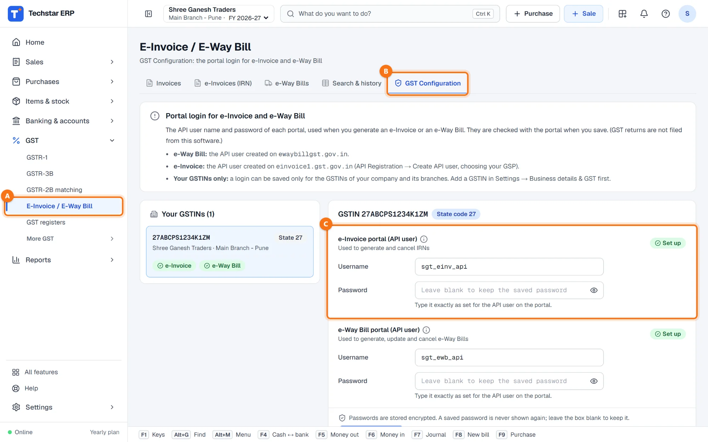
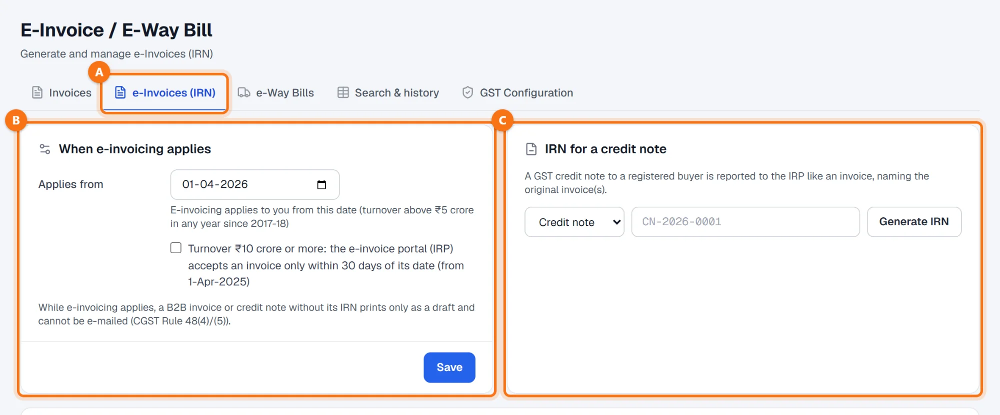
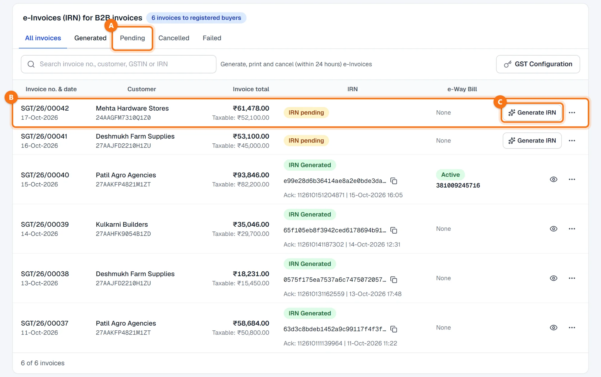
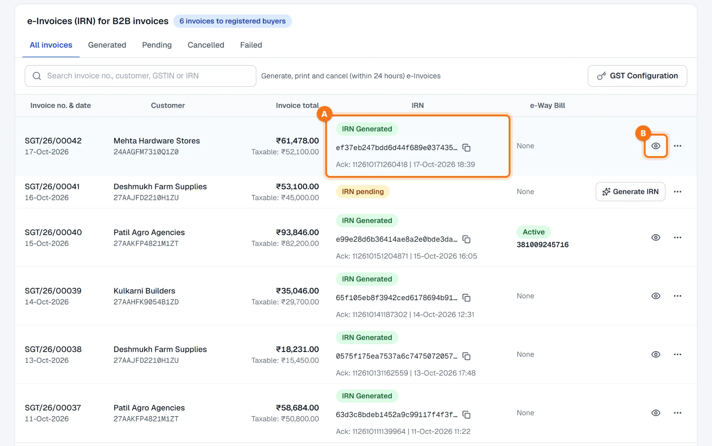
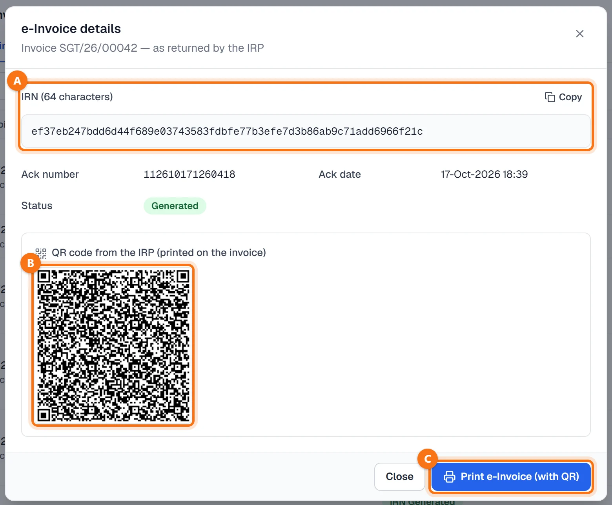
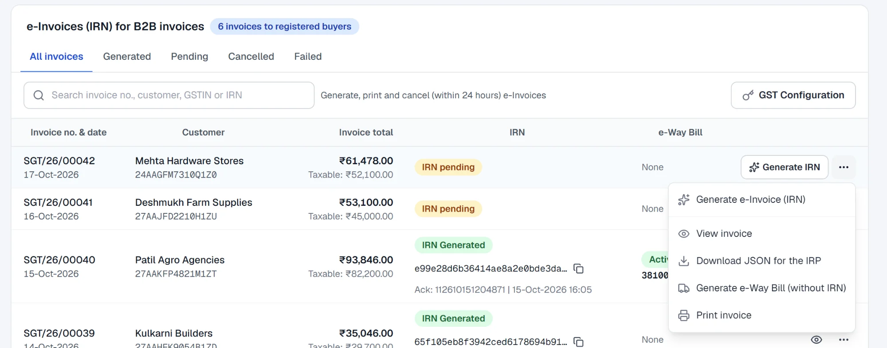
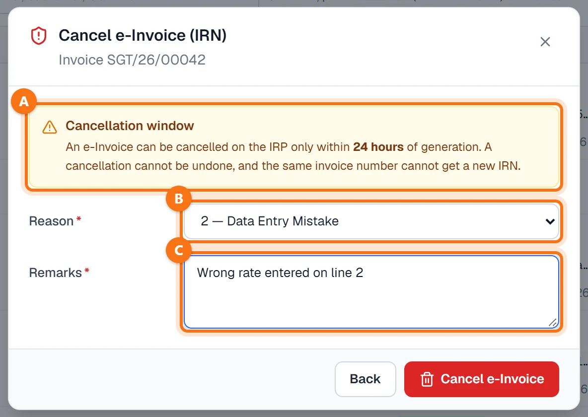

Techstar ERP मराठी आणि हिंदीतही वापरता येतो. वर उजवीकडे तुमच्या नावाच्या आद्याक्षराच्या गोल बटणावर click करा → Language (भाषा) → मराठी. ERP चा menu मराठीत दिसतो (उदा. Sales = विक्री). बिले आणि इतर कायदेशीर कागदपत्रे नेहमीप्रमाणेच छापली जातात. या guide मधले screenshots English menu चे आहेत.
सुरू करण्यापूर्वी
फक्त नोंदणीकृत ग्राहकांची इनव्हॉइस (GSTIN असलेले ग्राहक) ई-इनव्हॉइससाठी यादीत दिसतात. रद्द केलेली इनव्हॉइस दिसत नाहीत.
ई-इनव्हॉइस तुम्हाला लागू होते जेव्हा 2017-18 पासून कोणत्याही वर्षी तुमची उलाढाल ₹5 कोटींपेक्षा जास्त असते — असे ERP मधील सूचनाच सांगते. तुम्हाला लागू नसेल तर ही मार्गदर्शिका लागणार नाही.
वॉलेट: प्रत्येक IRN साठी तुमच्या वॉलेटमधून वापर शुल्क लागते (Settings → Wallet & usage charges, मराठी menu मध्ये: सेटिंग्ज → वॉलेट आणि वापर शुल्क). पोर्टलने इनव्हॉइस नाकारले तर शुल्क परत मिळते; बॅलन्स कमी असेल तर काहीच पाठवले जात नाही आणि ERP रिचार्ज करायला सांगतो.
एकदाच सेटअप: ई-इनव्हॉइस पोर्टल लॉगिन
- einvoice1.gst.gov.in वर तुमच्या GSTIN साठी API user बनवा (API Registration → Create API user, तुमचा GSP निवडून).
- Techstar ERP मध्ये GST → E-Invoice / E-Way Bill A उघडा (मराठी menu मध्ये: GST → ई-इनव्हॉइस / ई-वे बिल) आणि GST Configuration टॅब B वर जा.
- डावीकडे तुमचा GSTIN निवडा. e-Invoice portal (API user) C खाली Username आणि Password टाका आणि Verify & Save वर click करा. Save होण्याआधी लॉगिन पोर्टलवर तपासले जाते आणि बॅज Set up होतो.

पासवर्ड encrypt करून ठेवले जातात आणि पुन्हा दाखवले जात नाहीत. आधी save केलेला पासवर्ड तसाच ठेवायचा असेल तर save करताना बॉक्स रिकामा ठेवा. लॉगिन फक्त तुमच्या स्वतःच्या कंपनीच्या आणि शाखांच्या GSTIN साठीच save करता येतो (Settings → Business details & GST).
ई-इनव्हॉइस कधीपासून लागू आहे ते सांगा
e-Invoices (IRN) टॅब A उघडा. When e-invoicing applies B या कार्डमध्ये:
- Applies from — ज्या तारखेपासून तुमच्या व्यवसायाला ई-इनव्हॉइस लागू आहे ती तारीख.
- तुमची उलाढाल ₹10 कोटी किंवा जास्त असेल तर Turnover ₹10 crore or more वर टिक करा: मग ई-इनव्हॉइस पोर्टल (IRP) इनव्हॉइसच्या तारखेपासून फक्त 30 दिवसांच्या आतच इनव्हॉइस स्वीकारते. त्यापेक्षा जुने इनव्हॉइस ERP पाठवण्याआधीच थांबवतो.
- Save वर click करा.
ई-इनव्हॉइस लागू असताना, IRN नसलेले B2B इनव्हॉइस किंवा क्रेडिट नोट फक्त draft म्हणूनच प्रिंट होते आणि ई-मेल करता येत नाही.

IRN for a credit note C हे कार्ड नोंदणीकृत ग्राहकाला दिलेल्या GST क्रेडिट नोटसाठी आहे: Credit note किंवा Sales return निवडा, त्याचा नंबर टाका आणि Generate IRN वर click करा.
ई-इनव्हॉइसची यादी उघडा
कार्डच्या खाली e-Invoices (IRN) for B2B invoices या यादीत नोंदणीकृत ग्राहकांची इनव्हॉइस — ग्राहक, GSTIN, इनव्हॉइसची एकूण रक्कम, IRN आणि ई-वे बिलासह दिसतात. नवीन इनव्हॉइसवर IRN pending B दिसते.
All invoices / Generated / Pending / Cancelled / Failed हे टॅब वापरा — उदा. Pending A — किंवा इनव्हॉइस नंबर, ग्राहक, GSTIN किंवा IRN ने शोधा.

IRN बनवा
इनव्हॉइसवरील Generate IRN C वर click करा. ERP तुमच्या हिशोबातील इनव्हॉइसवरून ई-इनव्हॉइस बनवतो, तपासतो, IRP ला पाठवतो आणि आलेले उत्तर save करतो. काम झाल्यावर e-Invoice generated. असा संदेश येतो.
आता ओळीवर IRN Generated, IRN आणि acknowledgement नंबर व वेळ A दिसते.

Generation failed आले? पोर्टलने दिलेले कारण संदेशात दिसते, आणि ओळीवर Generation failed व Retry बटण दिसते. गरज असेल तर इनव्हॉइस किंवा ग्राहकाची माहिती दुरुस्त करा आणि Retry वर click करा — पुन्हा प्रयत्न करणे सुरक्षित आहे, कारण IRN आधीच बनलेला असेल तर IRP तोच IRN परत देते.
IRN आणि QR कोड पहा
ओळीवरील डोळ्याच्या बटणावर B click करा. e-Invoice details मध्ये IRP ने परत दिलेली माहिती दिसते:
- IRN (64 characters) A, Copy बटणासह;
- Ack number, Ack date आणि Status, आणि जोडलेले ई-वे बिल असल्यास ते;
- IRP कडून आलेला QR कोड B, जो इनव्हॉइसवर छापला जातो.
IRN आणि QR कोडसह इनव्हॉइस प्रिंट करण्यासाठी Print e-Invoice (with QR) C वर click करा.

इनव्हॉइसवरचे इतर पर्याय
प्रत्येक ओळीवरील ⋯ बटणात त्या इनव्हॉइसवर काय करता येते ते दिसते. IRN अजून pending असेल तर:
- Generate e-Invoice (IRN) आणि View invoice (रक्कम आणि आयटम);
- Download JSON for the IRP — तुमच्या हिशोबावरून बनलेली ई-इनव्हॉइस फाइल, ती IRP पोर्टलवर स्वतः upload करायची असेल तर (ERP मधून काहीही पाठवले जात नाही);
- Generate e-Way Bill (without IRN) आणि Print invoice.

IRN बनल्यावर menu मध्ये View e-Invoice details, Copy IRN, Print e-Invoice (with QR), Generate e-Way Bill (from IRN) आणि Cancel e-Invoice हे पर्याय येतात. ई-वे बिलासाठी पहा ई-वे बिल कसे बनवायचे.
24 तासांच्या आत ई-इनव्हॉइस रद्द करा
⋯ → Cancel e-Invoice निवडा. विंडोमध्ये Cancellation window A ची आठवण दिली जाते: ई-इनव्हॉइस IRP वर बनवल्यापासून फक्त 24 तासांच्या आतच रद्द करता येते, रद्द केलेले परत आणता येत नाही आणि त्याच इनव्हॉइस नंबरला नवीन IRN मिळत नाही.
- Reason B — 1 Duplicate, 2 Data Entry Mistake, 3 Order Cancelled किंवा 4 Other.
- Remarks C — आवश्यक: का रद्द करत आहात.
Cancel e-Invoice वर click करा. मग ओळीवर IRN Cancelled दिसते.

Active ई-वे बिल जोडलेले आहे? आधी e-Way Bills टॅबवर ते ई-वे बिल रद्द करा, मग IRN.
24 तास होऊन गेले? मग IRN रद्द करता येत नाही; त्याऐवजी क्रेडिट नोट द्या.
ई-इनव्हॉइस बनवण्याचे इतर मार्ग
- सेल्स इनव्हॉइस save केल्यावर लगेच — नोंदणीकृत ग्राहकासाठी ERP विचारतो Generate the e-Invoice now? Generate e-Invoice (IRN) किंवा Skip e-Invoice वर click करा. Skip केले तरी save झालेल्या इनव्हॉइसच्या स्क्रीनवर Generate e-Invoice (IRN) बटण असते. पहा सेल्स इनव्हॉइस कसे बनवायचे.
- Invoices टॅब — इनव्हॉइस शोधा आणि त्याच्या ओळीवरील Generate IRN वर click करा.
नेहमीचे प्रश्न
माझे इनव्हॉइस ई-इनव्हॉइसच्या यादीत का दिसत नाही?
लॉगिन किंवा credentials बद्दल error येतो.
इनव्हॉइस 30 दिवसांपेक्षा जुने आहे आणि ERP ते नाकारतो.
IRN बनल्यानंतर इनव्हॉइस दुरुस्त करता येते का?
IRN बनवल्याने माझा हिशोब बदलतो का?
आणखी guides
Screenshots Techstar ERP मधील demo कंपनीचे आहेत (Shree Ganesh Traders, Pune). सर्व नावे, GSTIN, रकमा आणि कागदपत्रांचे नंबर नमुना माहिती आहेत.